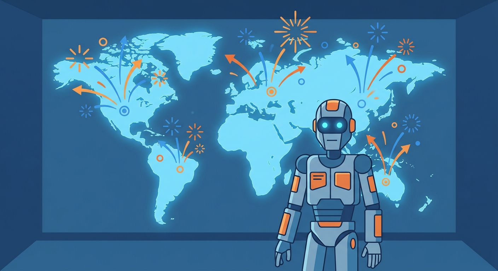
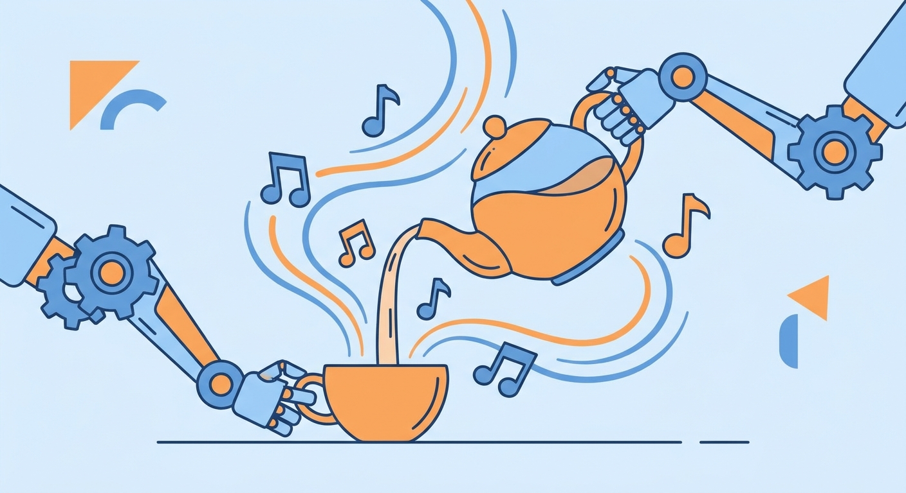
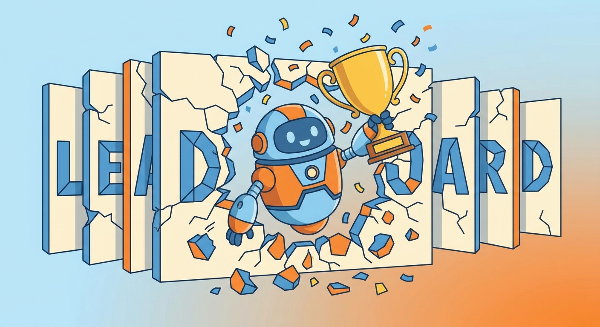
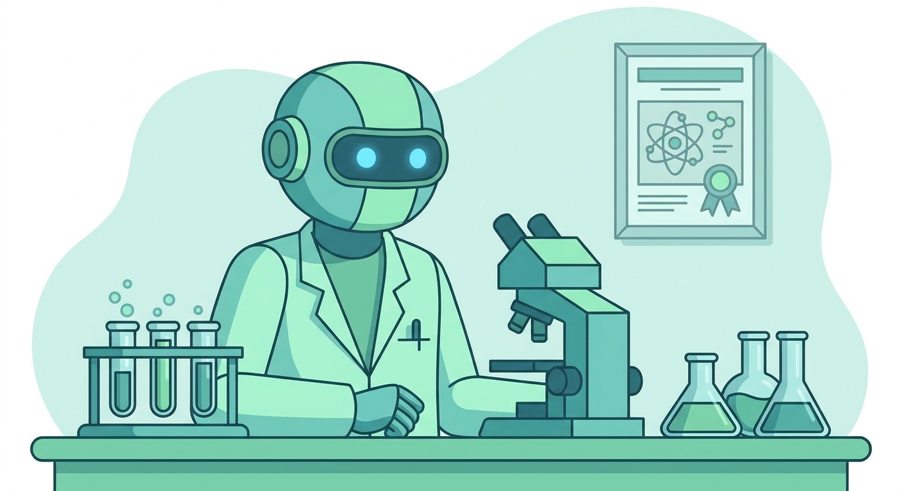
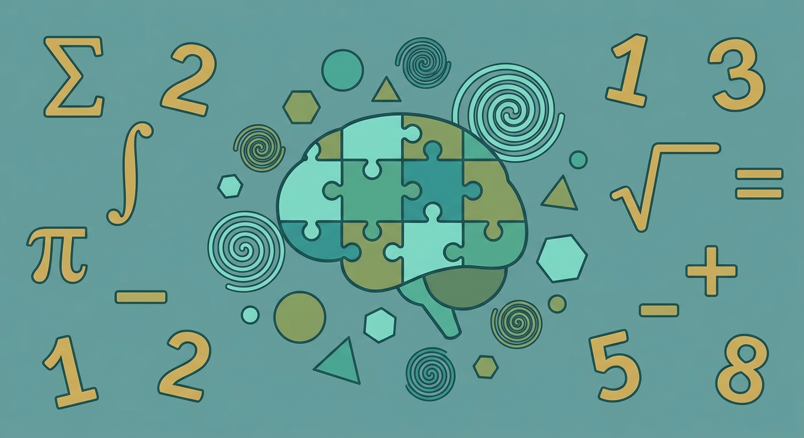
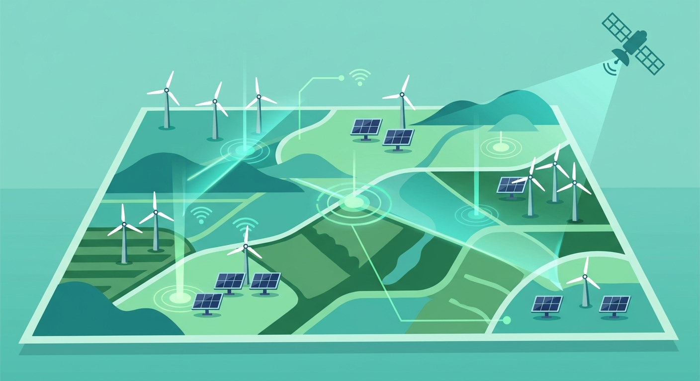
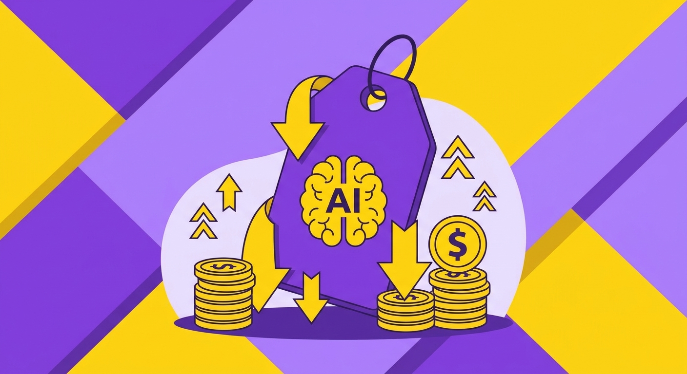
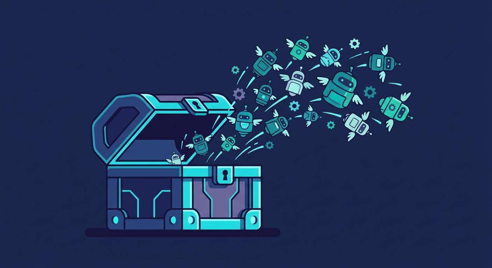
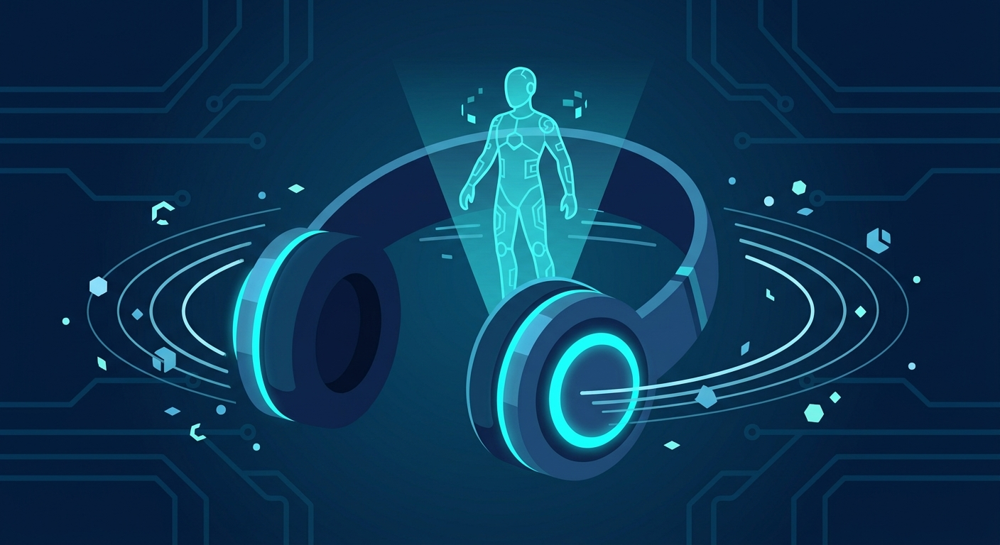
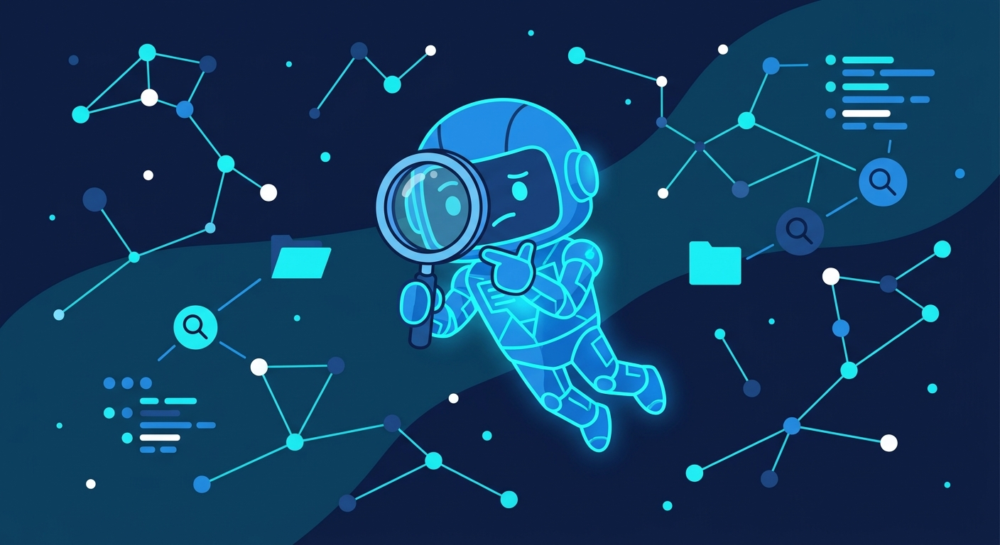

技术突破
全球首个事件级具身智能世界模型WALL-WM发布
来源：AIbase · 2026年5月31日
自变量机器人团队发布全球首个基于"事件级预测"的具身智能世界模型WALL-WM，突破传统按时间帧学习的局限，将预测单位切换为语义事件，让机器人从"逐帧模仿"进化为"理解事件"，标志着具身智能进入新阶段。
查看原文 →自变量机器人发布全球首个事件级具身智能世界模型WALL-WM；哈佛AutoScientists开源自主闭环科研智能体；Anthropic年化收入470亿美元冲击万亿美元市值；清华大学开源多模态全交互智能体框架Syll。

自变量机器人团队发布全球首个基于"事件级预测"的具身智能世界模型WALL-WM，突破传统按时间帧学习的局限，将预测单位切换为语义事件，让机器人从"逐帧模仿"进化为"理解事件"，标志着具身智能进入新阶段。
查看原文 →
千寻智能高阳团队提出Legato方法，从训练机制出发让机器人动作天然具有连续性，告别传统动作分块间的"犹豫"和"断点"。在双臂机器人五个操作任务上，任务完成时间平均缩短10%，轨迹平滑性提升超40%。
查看原文 →
星海图机器人凭借自回归技术创新，在7项具身智能权威评测基准上全面登顶。这一成果展示了自回归策略在机器人操作中的巨大潜力，为具身智能从实验室走向真实场景提供了更强大的技术基座。
查看原文 →AI应用公司MiniMax全球企业及开发者客户突破百万，半年增长5倍，用户规模达3亿。这一数据标志着AI应用从早期尝鲜阶段进入大规模商业落地，AI正在成为企业标配的基础能力。
查看原文 →
福客AI获得阿里巴巴战略投资，双方将聚焦电商数字生产力提升。合作将AI Agent技术深度融入商家运营全链路，覆盖客户接待、导购推荐、商品管理、交易及售后等关键环节，推动电商行业智能化升级。
查看原文 →
谷歌高管披露，九成游戏开发商已悄然采用生成式AI技术。育碧要求所有应聘者具备AI相关经验，《ARC Raiders》开发商用AI彻底改革开发流程。AI已从游戏行业的"可选项"变为"必选项"。
查看原文 →
哈佛大学推出自主智能体框架AutoScientists，能实现"假说生成-实验规划-闭环验证-论文撰写"全流程自主运行。在生物医学、材料科学等多个学科压力测试中表现优异，标志着AI从科研助手向独立科研团队的跨越。
查看原文 →
北京天坛医院与影禾医脉联合发布"小君医生2.0"，全球首个全疾病覆盖的颅脑CT辅助报告生成大模型。基于天坛医院海量颅脑CT影像数据训练，实现从影像解析到诊断报告的全流程自动化，显著提升神经影像诊断效率与标准。
查看原文 →
初创公司Axiom Math的AI系统自2月以来提交的8篇数学论文中，5篇通过同行评审被接收，尤其在解决分拆多项式倒数和等复杂猜想上取得实质性突破，标志着AI在纯数学研究领域的又一里程碑。
查看原文 →• AutoScientists - 哈佛自主闭环科研智能体框架 [GitHub]
• LeRobot - HuggingFace开源具身智能机器人学习框架 [GitHub] | [HuggingFace]
• Protenix - 开源蛋白质结构预测工具 [GitHub] | [HuggingFace]
• ESM-2 - Meta开源蛋白质语言模型 [GitHub] | [HuggingFace]

Anthropic宣布年化收入突破470亿美元，正式提交招股书冲击万亿美元市值。自2月G轮融资后，旗舰模型Claude在企业级市场全面爆发，推动业绩飞速增长，此次IPO将成为AI行业史上最大规模的上市事件之一。
查看原文 →
阶跃星辰开源Step 3.7 Flash模型，以Apache 2.0协议开放权重，直击Agent时代效率与可靠性核心痛点。ClawEval-1.1获67.1分排名第一，SimpleVQA Search得79.2分居首，SWE-PRO以56.3分位列第二，全面展示Agent任务实战能力。
查看原文 →
苹果工程师团队发布感知图像编解码器PICO，在相同视觉质量下文件体积仅为AV1、VVC等主流标准的1/3到1/2。iPhone 17 Pro Max上编码12MP照片仅需230毫秒，这是首次有人系统性地将感知压缩工程化并装进手机。
查看原文 →
清华大学智能视觉实验室开源Syll框架，统一兼容GUI、CLI与MCP/API三种操作方式。用户只需手动操作一遍，Syll即可自动录制流程并沉淀为可复用技能，全程操作透明可审计，支持本地模块化部署保障隐私安全。
查看原文 →
字节跳动旗下扣子平台发布3.0版本，支持多个Agent以团队方式协作完成复杂任务。从单智能体执行升级为多智能体协同编排，每个Agent承担不同角色，通过分工配合提升整体效率，开启Agent协作新时代。
查看原文 →
阿里云百炼宣布全面CLI化并开源，将主流模型、工作流、知识库、记忆管理、联网搜索等核心能力封装为轻量命令行入口。开发者安装鉴权后即可高效使用，大幅降低AI Agent接入和开发门槛，推动Agent开发全栈一体化。
查看原文 →• Syll - 清华大学多模态全交互智能体框架 [GitHub]
• Step-3.7-Flash - 阶跃星辰开源Agent模型 [GitHub] | [HuggingFace]
• Dify - 开源LLM应用开发平台 [GitHub] | [HuggingFace]
• OpenHands - 开源AI Agent编码平台 [GitHub]